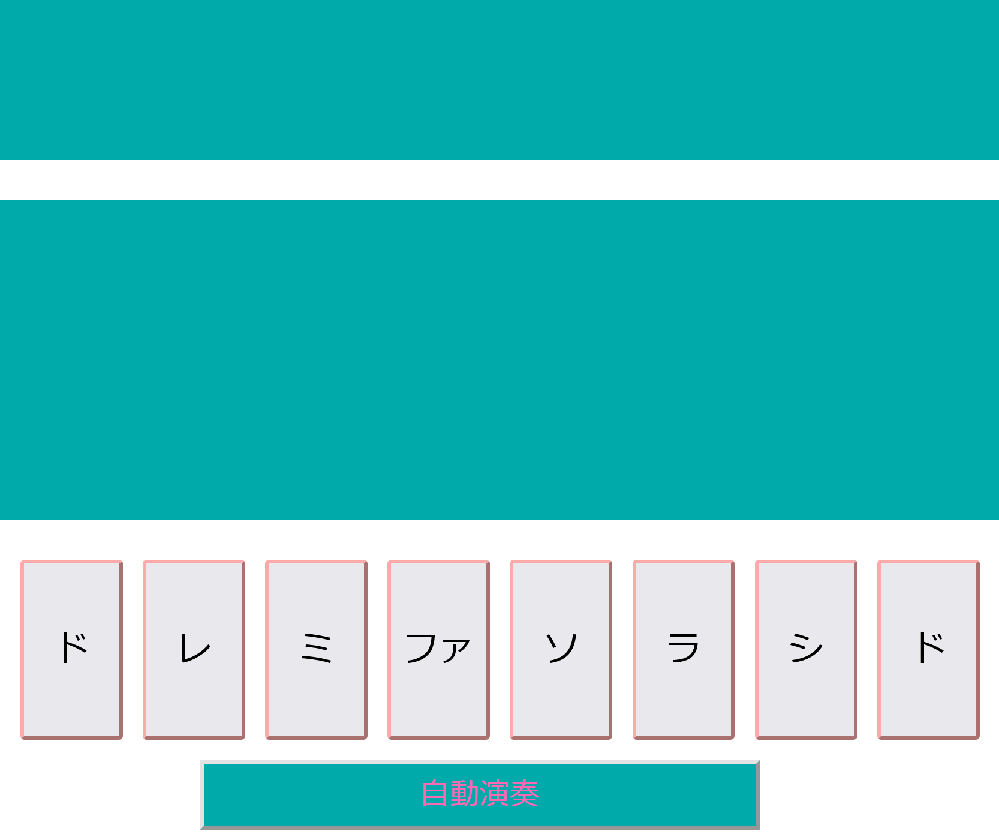
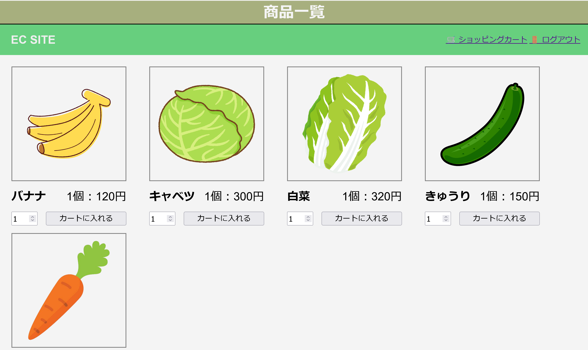

自己紹介Self Introduction
私の名前は橋山岳央です。日本出身で現在はディーキャリアITエキスパート中野オフィスにて、
プログラミング学習に取り組んでおります。
どうぞよろしくお願いいたします。

スキルSkills
- HTML/CSS
- JavaScript
- PHP/MySQL
使用可能ツールTours
- Github
- Visual Studio Code
- Slack
- FileZilla
- Redmine
実装サンプルSample
画像ギャラリー

宇宙飛行士と月
幻想的な色彩の月と雲の前に、宇宙飛行士が立っています。

朝日と石
積み重ねられた石を、朝日が照らしています。

鏡のような湖
空と海がどちらかわからなくなるような、鏡のような湖です。

ハートの風船
青空をバックに、たくさんの色とりどりのハートの風船が浮いています。
訓練課題
JavaScript:ピアノアプリ
--要件外機能--
2つの要件外機能を実装しました。
1点:ド(高音)の実装
解説:要件機能の鍵盤と同じ形式のド(高音)の鍵盤を追加しました。 既存の鍵盤と同様の機能を有しています。
この機能の目的:多くのピアノアプリを参考資料にしていた所、ド(高音)が存在しないのが不自然だったため追加しました。
工夫点:既存のリソースを流用し、余計な要素を使用しない事で、この機能によって不具合が発生しにくいように工夫しました。
2点:鍵盤を押すとその音が実際に出力する機能を追加しました。 解説:Web Audio APIを使用して、鍵盤の音に対応した周波数のHzが流れる機能を実装しました。 ディスプレイに押した鍵盤の音階が表示されるのと同様に、対応した周波数を配列に格納しておき、 鍵盤に押した時に、音階の表示と同時にwep Audio APIを用いて、出力するようにしました。 例:ド(低音)の鍵盤を押した場合、261Hzの音が流れる。
目的:ピアノアプリとして音を出す機能は有用だと考え実装しました。
工夫点:Web Audio APIを使用する事で、外部からmp3ファイルを用いずにブラウザから音が流れるように工夫しました。
使用方法:鍵盤部分を押すと音が鳴り音階が表示されます。(音は左からド(低音)レミファソラシド(高音)です。)
自動演奏:自動演奏ボタンを押すと、3曲の内1曲がランダムに自動で演奏されます。
PHP:ECサイト

--要件外機能--
2つの要件外機能を実装しました。
1点:商品一覧ページの段階で商品を任意の数指定してカートに入れられるようにしました。
2点:二重投稿防止の改善として、PRGパターンを実装しました。
工夫点:セキュリティ向上のためパスワードをハッシュ化しました。password_verify() を用いて、「入力したパスワード」を内部でハッシュ化して、「保存されたハッシュ」と比較しています。
使用方法:①新規登録ページで自身のユーザ名とパスワードを設定してください。②ログインページで登録したユーザ名とパスワードを入力すると、 ログインが完了し、商品ページへ移行します。③商品ページから購入したい商品の下部のカートに入れるボタンを押すとショッピングカートに選択した商品が入ります。④購入したい商品をすべてショッピングカートに入れ終わった後、画面右上のショッピングカートボタンを押してください。 ⑥ショッピングカートで先ほど入れた商品名と個数を確認して問題なければ、購入するボタンを押してください。これで購入が完了します。
商品管理ページ(管理者ページ):ユーザ名とパスワード共に、「ec_admin」と入力すると、商品の管理画面に遷移します。 商品の追加や削除、在庫管理、公開、非公開を設定できます。
WordPress:架空Webサイト

工夫点:HTMLで作られた既存の静的ファイルから、WordPressでテーマを作成しました。プラグインを用いて、パンくずリスト・お問い合わせフォーム・ページ送りナビゲーションを実装しています。